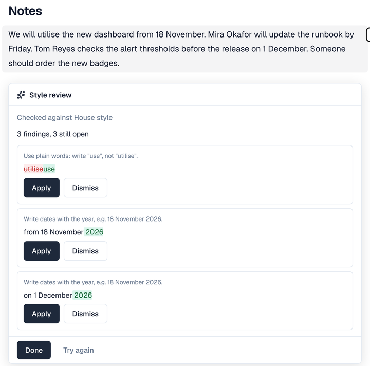
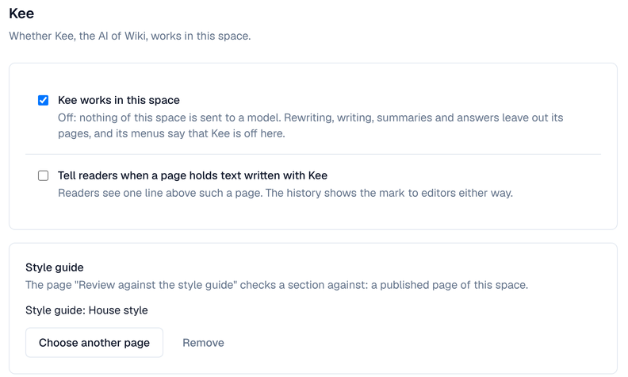
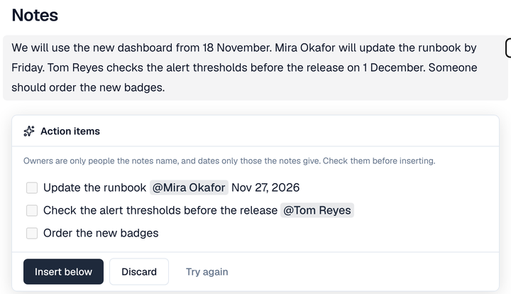
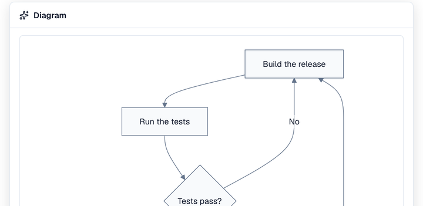
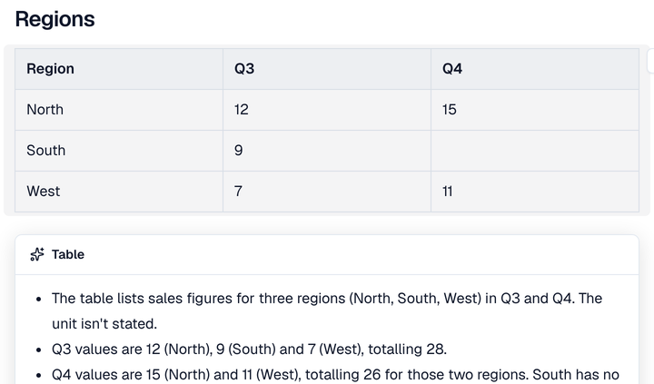

Besides rewriting, Kee has four helpers in the editor: a review against your space's style guide, action items from meeting notes, a diagram drawn from text, and help with tables. You find them in a section's menu, in Kee's group under the rewrites. Each one shows its result in a panel under the section first: nothing changes on the page until you choose to apply or insert it, and one Undo takes it back off.
You need to be able to edit the page, Kee must be on for you and in the space, and the Writing help in the editor feature must be on. Each helper's run counts as one request against your daily limit.
| Helper | In the menu of | What you get |
|---|---|---|
| Review against the style guide | A text or heading section, when the space has a style guide | Findings, each with a suggested change you apply or dismiss one by one |
| Turn into action items | A text section | A task list to insert below |
| Draft a diagram… | A text or heading section | A diagram (Mermaid) to insert below |
| Make a table | A text section | The section as a table, in its place |
| Add a column…, Fill empty cells | A table | The table with a new column, or its empty cells filled, in its place |
| Summarise the table, Ask about the table… | A table | Text to insert below the table |
Select some words in a paragraph, then the Kee button beside them: its panel also offers Draft a diagram, Action items and Make a table for just those words. The result is then inserted below.
1. Review against the style guide
A space's admins can choose one published page of the space as its style guide: a page that lists your writing rules, such as "Use plain words" or "Write dates with the year". Kee checks a section against that page, and only that page.
- Open the page in the editor, rest the pointer on a section and open its menu (the handle at its right).
- Select Review against the style guide. Kee reads the section against the guide.
- Read each finding: the rule it breaks and the change Kee suggests. Select Apply to make that change in the page, or Dismiss to leave it.
- Select Done when you have gone through them, or Try again for a new review.

- The item is in the menu only while the space names a style guide. If the guide page was deleted, unpublished or locked away from you, the review says it can't be read.
- Kee reads the guide with your own access, every time. A very long guide is read in part: the panel says so.
- A finding whose text changed since Kee read it says This text has changed, so the suggestion can't be applied. Run the review again.
- Some findings suggest removing text: their button says Remove this text.
- Findings are never posted as comments, and nothing is kept once you close the panel.
2. Choose the style guide (space admins)
- Open the space and select Space settings in its sidebar.
- Open the Kee tab.
- Under Style guide, choose a published page of this space. Choose another page changes it and Remove takes it away.

A good guide page is short and lists one rule a line, with an example of each. Only a published page of the same space can be the guide; a draft or another space's page is refused. Changing it raises space.ai_settings.update with the page chosen and the one before.
3. Meeting notes to action items
- Open a section of notes in the editor and open its menu (the handle at its right).
- Select Turn into action items. Kee lists the tasks the notes give.
- Check each task, its owner and its date.
- Select Insert below to add them as a task list under the notes, Discard to drop them, or Try again.

- An owner is only a person the notes name, and only when exactly one person you may mention matches that name; otherwise the name stays as text. Nobody is made up.
- A date is only one the notes give. "By Friday" becomes the date of that Friday.
- A task nobody was named for has no owner. The inserted tasks work like any task: the mention is the assignee, the date the due date.
4. A diagram from text
- Open the menu of the section that describes the steps (the handle at its right).
- Select Draft a diagram…. Under What to draw (optional), say what you want, for example "a flowchart of the steps", then Draft.
- Look at the diagram drawn in the panel.
- Select Insert below to add it as a Mermaid diagram under the section, or Discard.

The diagram is checked before you see it. When it can't be drawn, Kee corrects it once; if it still can't be drawn the panel says The diagram couldn't be drawn and nothing is inserted. The diagram is an ordinary Mermaid block: edit its text afterwards like any other.
5. Tables
- Open the menu of a text section, or of a table (the handle at its right).
- On text, select Make a table. On a table, select Add a column… (and say which column, for example "the owner of each row"), Fill empty cells, Summarise the table or Ask about the table… (and type your question).
- Read the result in the panel.
- Select Replace to put a new table in place of the old one, or Insert below for a summary or an answer. Keep original or Discard leaves the page as it was.

- Kee works on real tables of the editor. A new column is checked to be exactly one more column; a fill only changes cells that were empty.
- When the table doesn't make any empty cell clear, the panel says Nothing to fill and the table stays as it was.
- Tables have no Ask for more changes. To change a result, run the helper again.
6. Good to know
- The helpers use the same model picker, limits and notices as the rewrites (see Writing with Kee).
- A version with text applied from a helper is marked with Kee in the page history, like a rewrite.
- The section menu now opens above its handle when there is more room there, and scrolls when it is long.
- Nothing of a helper is available in a space where Kee is off.